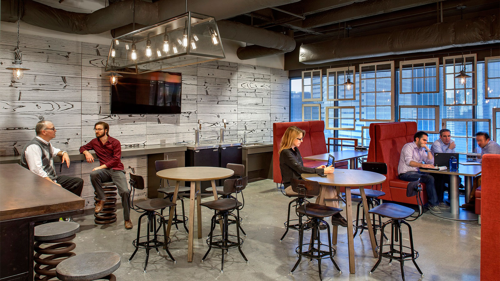

Swim Manager: Online Meet Entry
Background
Swim Manager is a tool that allows meet organizers to schedule events and enables coaches to register their swimmers for events. We received complaints from users that the Online Meet Entry feature (OME) was too time consuming for coaches to use.
I began this research project by speaking with product managers and account managers to gain a base understanding of the products, and then interviewed 7 coaches that ranged from small to large swimming programs.
Problem
Online Meet Entry (OME) is a feature that enables swimmers to register themselves into upcoming competitions and select specific events in which they want to compete. Allowing swimmers to self-register saves coaches time, but coaches must wait until the registration period ends before they can finalize their teams’ lineups. The registration period typically ends only a few days before the competition, and often happens while teams are traveling or busy preparing for the upcoming competition. Confirming registrations typically takes a few minutes per swimmer, which results in hours of work that must be completed quickly.
Recommendations
At Active, design researchers are responsible for identifying and defining problem areas that allow UX designers to develop solutions and iterative improvements. In my published research reports, I specifically identify problem areas and state the general amount of work that is necessary to resolve those issues. The recommendations I included for this OME analysis included features that created pain-points for coaches and functional gaps that caused dissatisfaction with end-users.
I concluded the amount of time available for coaches to finalize their rosters was arbitrarily limited and allowing them to do this earlier in the process would be a big win only requiring a limited amount of development effort. I also discovered additional frustrations coaches experienced managing swimmer profiles along with some back-end processes making it difficult for end-users to update their profiles or make payments. I also recommended additional product features and enhancements requiring more design and development work, such as improving our email tool to allow coaches to include a customized itinerary for swim meets (e.g. hotel information, travel logistics, meeting times for teams). While these recommendations were not required to address the flaws with the OME feature, they would certainly improve the experiences for coaches and end-users.